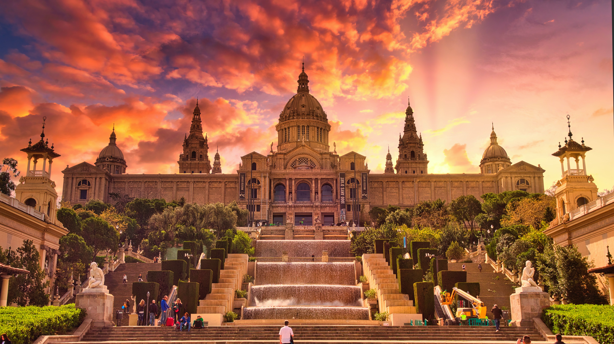

Barcelona has become one of the first tourist destination of Spain, it has everything to please the majority of visitors : with a history among the oldest in Europe, a capital, Barcelona, which never sleeps and an inland full of charm not to forget beautiful beaches in La Costa Brava. The variety of artistic treasures, the Romanesque churches and the great names in modern art and architecture.
Barcelona sited between the sea and the mountains, has found a formidable balance: a foot in the traditional things and the other in the avant-garde. Barcelona has the reputation of being the most cosmopolitan, modern and avant-garde city in Spain and it has renewed for the 1992 Olympic Games.
It’s a hub of new trends in the world of culture, fashion and cuisine. It combines the creativity of its artists and designers with respect and care for local traditions. The charm and slower pace of the old town, the avant-garde vibe of more modern neighbourhoods, and the fast pace of one of the world’s most visited cities coexist in Barcelona.